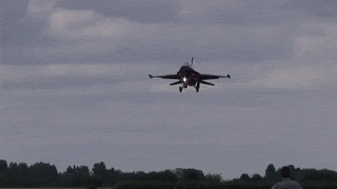
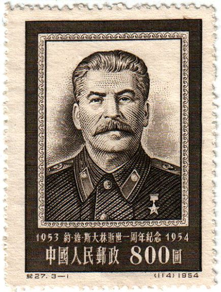

welcome to the freedom dome zone.
please choose a menu below.
dome home dope zone Political cool gif S E C R E T L I N Kok now that
that is a boss gif

Иосиф Сталин
Иосиф Виссарионович Сталин
1878-1953
Ио́сиф Виссарио́нович Ста́лин (настоящая фамилия — Джугашви́ли, груз. იოსებ ჯუღაშვილი; 6 [18] декабря 1878 (по официальной версии 9 [21] декабря 1879), Гори, Тифлисская губерния, Российская империя — 5 марта 1953, Ближняя дача, Волынское, Кунцевский район, Московская область, РСФСР, СССР) — российский революционер, советский политический, государственный, военный и партийный деятель. С 21 января 1924 по 5 марта 1953 — руководитель Советского государства[2][3]. Генералиссимус Советского Союза (1945). Маршал Советского Союза (1943)[4].
С 1895 года в возрасте 15 лет вступил в подпольное революционное движение. Вёл пропаганду марксизма среди семинаристов и рабочих. В 1900 году впервые участвовал в организации забастовок и протестов рабочих[⇨]. В 1901 году вступил в РСДРП, после раскола присоединился к большевикам. В 1904 году стал одним из главных организаторов большой бакинской стачки, итогом которой стало заключением первого в Российской империи коллективного договора между бастующими и промышленниками. В 1909—1917 годах неоднократно арестовывался и отправлялся в ссылки, откуда также неоднократно совершал побег. В 1912 году по предложению В. И. Ленина включён в ЦК РСДРП. Тогда же Иосиф Джугашвили окончательно берёт себе псевдоним «Сталин»[⇨].
После Февральской революции вернулся в Петроград. С возвращением Ленина в Россию Сталин поддержал его лозунг превращения «буржуазно-демократической» февральской революции в пролетарскую социалистическую революцию. Выступал за вооружённое восстание в противовес Каменеву и Зиновьеву[⇨]. Одновременно с Октябрьской революцией, Вторым Всероссийским съездом был избран членом ВЦИК и СНК. Участвовал в гражданской войне. В 1922 году на Пленуме ЦК РКП(б) был избран членом Оргбюро и Политбюро ЦК РКП(б), а также Генеральным секретарём ЦК РКП(б) (при нахождении Ленина на должности Председателя СНК СССР[⇨]).
В 1924 году, после смерти Ленина, Сталин, отстаивая идею о построении социализма в отдельно взятой стране, разгромил оппонентов. По разным оценкам, период внутрипартийной борьбы продолжался вплоть до 1928—1933 годов, из которой Сталин вышел победителем[прим. 1][⇨]. В 1928 году, после неоднозначных результатов НЭПа, Сталин взял курс на форсированную индустриализацию[⇨], коллективизацию[⇨] и построение плановой экономики, что в период первых пятилеток обеспечило определённые темпы роста национального дохода. Наряду с этим, по стране прокатилась волна депортаций народов, религиозных преследований, раскулачивания, неурожая и смертей от голода, массовых политических ссылок в лагеря и казней[⇨].
С 1937 по 1938 год в СССР бушевал «Большой террор» (также именуемый как «Ежовщина»). За этот период органами НКВД СССР было осуждено 1 344 923 и расстреляно 681 692 человека[5][прим. 2]. Закончился с заменой Н. И. Ежова на посту главы НКВД Л. П. Берией (и расстрелом первого). Лично Сталиным и Политбюро ЦК ВКП(б) по т. н. «Сталинским расстрельным спискам» было вынесено на осуждение 43 768 человек, в подавляющем большинстве это члены управленческих структур, в том числе НКВД и РККА (почти все расстреляны)[6]. В этот период погибло 78 % членов ЦК ВКП(б). Самой жесткой чистке подверглись органы НКВД[⇨].
В 1939 году, после прихода национал-социалистов к власти в Германии и сговоре Великобритании, Франции, Италии и Польши с первыми, а также подписания Франко-Германского и Англо-Германского договоров о ненападении, Сталин заключает с Гитлером договор о ненападении («пакт Молотова — Риббентропа») и секретный дополнительный протокол в нему о «границах сфер интересов», на основании которых после вторжения Германии в Польшу и начала Второй мировой войны СССР присоединил к себе территории Западной Украины и Западной Белоруссии, Прибалтики, Бессарабии и Северной Буковины, а также после предъявления ультиматума и последующего нападения СССР на Финляндию и тяжёлых зимних боёв, отодвинул границу от Ленинграда с 18 до 150 км[прим. 3].
Спустя год после падения Франции, 22 июня 1941 года, вооружённые силы Третьего рейха пересекают границу СССР. Начинается Великая Отечественная война. Спустя 3 года и 10 месяцев Советский Союз под руководством Сталина как верховного главнокомандующего[⇨], понеся огромные материальные[прим. 4] и людские[прим. 5], но сопоставимые в военном соотношении[прим. 6] потери, выходит из неё победителем. После разгрома стран Оси Антигитлеровской коалицией советские и американские войска упираются друг в друга на Эльбе в Германии на западе, и на 38-й параллели в Корее на востоке. Страны в зоне влияния СССР становятся социалистическими. Разведка информирует Сталина о разработанном плане наступательных действий США и Великобритании против СССР. Из-за наличия у США уникального атомного оружия, а также прецедента его применения по мирным городам перед Сталиным возникли новые задачи — в 1946 году началась Холодная война.
В 1947 году Сталин проводит денежную реформу с деноминацией и конфискацией. Так как потребительские товары с 1941 по 1947 распределялись по карточной системе, денег у большинства населения не было. Реформа проводилась с целью изъятия фальшивых денег и воспрепятствования спекулянтам, нажившимся на войне[⇨].
В 1949 году были произведены первые успешные атомные испытания (проект курировал Л. П. Берия). Вслед за США Советский Союз стал наращивать количество атомных боеголовок, создав гарантию разрушительного ответного удара в случае атомной войны, СССР стал сверхдержавой и одним из двух полюсов силы[⇨].
Иосиф Сталин умер 5 марта 1953 года, согласно медицинскому заключению — от кровоизлияния в мозг. После его смерти в правительстве сформировалось три полюса силы из Л. П. Берии, Г. М. Маленкова и Н. С. Хрущёва. В июне 1953 Берия был арестован и расстрелян сторонниками Хрущёва. 7 сентября 1953 года на пленуме ЦК Хрущёв был избран первым секретарём ЦК КПСС. Маленков был смещён с партийных позиций в 1957 году[⇨].
По мнению многих историков, правление Сталина характеризовалось наличием автократического режима личной власти, господством авторитарно-бюрократических методов управления, чрезмерным усилением репрессивных функций государства, сращиванием партийных и государственных органов, жёстким контролем государства за всеми сторонами жизни общества, нарушением фундаментальных прав и свобод граждан[7][8][9][10][11][12][13].
олучив свободу в результате Февральской революции, Сталин вернулся в Петроград. До приезда Ленина из эмиграции он был одним из руководителей ЦК РСДРП и Петербургского комитета партии большевиков, входил в редколлегию газеты «Правда».
Вначале Сталин поддерживал Временное правительство[56], исходя из того, что демократическая революция ещё не завершена и свержение правительства не является практической задачей. На Всероссийском совещании большевиков 28 марта в Петрограде во время обсуждения инициативы меньшевиков о возможности воссоединения в единую партию Сталин заметил, что «объединение возможно по линии Циммервальда-Кинталя». Однако после возвращения Ленина в Россию Сталин поддержал его лозунг превращения «буржуазно-демократической» февральской революции в пролетарскую социалистическую революцию.
Сталин на картине В. А. Серова «Ленин провозглашает Советскую власть». Марка СССР, 1954 г.
14—22 апреля был делегатом I Петроградской общегородской конференции большевиков. 24—29 апреля на VII Всероссийской конференции РСДРП(б) выступил в прениях по докладу о текущем моменте, поддерживал взгляды Ленина, выступил с докладом по национальному вопросу; был избран членом ЦК РСДРП(б)[39].
В мае — июне участвовал в антивоенной пропаганде; был одним из организаторов перевыборов Советов и участвовал в муниципальной кампании в Петрограде. 3—24 июня участвовал в качестве делегата в I Всероссийском съезде Советов рабочих и солдатских депутатов; был избран членом ВЦИК и членом Бюро ВЦИК от фракции большевиков. Также участвовал в подготовке несостоявшейся демонстрации, намеченной на 10 июня, и демонстрации 18 июня; опубликовал ряд статей в газетах «Правда» и «Солдатская правда»[39].
Ввиду вынужденного ухода Ленина в подполье, Сталин выступил на VI съезде РСДРП(б) (июль — август 1917) с отчётным докладом ЦК. На заседании ЦК РСДРП(б) 5 августа был избран членом узкого состава Центрального комитета. В августе — сентябре главным образом вёл организационно-журналистскую работу. 10 октября на заседании ЦК РСДРП(б) проголосовал за резолюцию о вооружённом восстании, был избран членом Политического бюро, созданного «для политического руководства на ближайшее время»[39].
В ночь на 16 октября на расширенном заседании ЦК выступил против позиции Л. Б. Каменева и Г. Е. Зиновьева, которые проголосовали против решения о восстании[39], тогда же был избран членом Военно-революционного центра, который вошёл в Петроградский ВРК[57].
24 октября (6 ноября), после разгрома юнкерами типографии газеты «Правда», Сталин обеспечил выход газеты, в которой опубликовал редакционную статью «Что нам нужно?» с призывом к свержению Временного правительства и замене его Советским правительством, избранным «представителями рабочих, солдат и крестьян»[прим. 11]. В тот же день Сталин и Троцкий провели совещание большевиков — делегатов I Всероссийского съезда Советов рабочих и солдатских депутатов, на котором Сталин выступил с докладом о ходе политических событий. В ночь на 25 октября (7 ноября) участвовал в заседании ЦК РСДРП(б), который определил структуру и наименование нового, советского правительства[39].
На выборах во Всероссийское учредительное собрание в Петроградском столичном округе был избран депутатом от РСДРП(б).
Иосиф Сталин
Конституция Российской Федерации.
Раздел "Документы" на официальном сайте Президента России.
Информационно-правовая система «Законодательство России».
Система официального опубликования правовых актов в электронном виде.
Поиск нормативных документов Правительства Российской Федерации.
База данных «Федеральные законы» на официальном Интернет-сайте Совета Федерации Федерального Собрания Российской Федерации.
а) утверждение изменения границ между субъектами Российской Федерации;
б) утверждение указа Президента Российской Федерации о введении военного положения;
в) утверждение указа Президента Российской Федерации о введении чрезвычайного положения;
г) решение вопроса о возможности использования Вооруженных Сил Российской Федерации за пределами территории Российской Федерации;
д) назначение выборов Президента Российской Федерации;
е) отрешение Президента Российской Федерации от должности;
ж) назначение на должность судей Конституционного Суда Российской Федерации, Верховного Суда Российской Федерации;
з) назначение на должность и освобождение от должности Генерального прокурора Российской Федерации и заместителей Генерального прокурора Российской Федерации;
и) назначение на должность и освобождение от должности заместителя Председателя Счетной палаты и половины состава ее аудиторов.